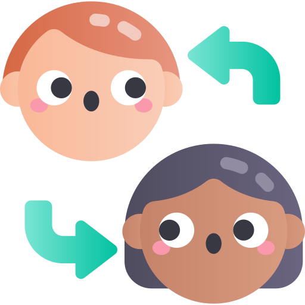
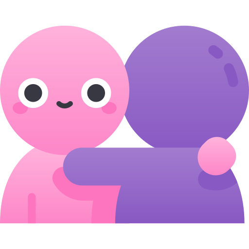

Physical
Hitting, kicking, tripping, or damaging someone's belongings

The CDC defines bullying as any unwanted aggressive behavior(s) by another youth or group of youths, who are not siblings or current dating partners, that involves an observed or perceived power imbalance, and is repeated multiple times or is highly likely to be repeated. Bullying may inflict harm or distress on the targeted youth including physical, psychological, social, or educational harm.
Bullying is not a one-time argument, a single mean joke between friends, or ordinary teasing that both people find funny. It is repeated, hurtful, and makes someone feel unsafe or powerless. It can happen at school, in your neighborhood, on the bus, or online through phones and social media.
Hitting, kicking, tripping, or damaging someone's belongings
Name-calling, insults, threats, or cruel teasing
Spreading rumors, embarrassing someone, or leaving them out on purpose
Stealing, hiding, or breaking things that belong to the victim
Hurtful messages, posts, photos, or exclusion through texts, games, or social media
Look at the kid bullying you and tell them to stop in a calm, clear voice. If joking comes naturally to you, laughing it off can sometimes catch a bully off guard.
If speaking up feels too hard or unsafe, walk away and stay away. Don't fight back. Find an adult to stop the bullying on the spot.
Tell a parent, teacher, counselor, or another adult you trust. You don't have to handle it alone.
Write down what happened — who was involved, where, when, and what was said or done. This helps adults take action.
Talk to an adult you trust. Don't keep your feelings inside. Telling someone can help you feel less alone. They can help you make a plan to stop the bullying.
Stay away from places where bullying happens when you can.
Stay near adults and other kids. Most bullying happens when adults aren't around.
Build friendships with people who treat you with respect. Having allies makes a real difference.

Cyberbullying is bullying that happens through technology — texts, group chats, social media, online games, live streams, or any app where people connect. Because phones and computers are part of daily life, online bullying can follow you home and feel harder to escape than bullying that only happens in person.
It is still bullying when it is repeated, one-sided, and meant to hurt or control someone. It is never your fault if someone targets you online.
Don't respond to hurtful messages. Replying can make things worse and gives the bully attention.
Save evidence — screenshots, links, usernames, dates, and times. Adults and platforms need proof.
Block and report on the app or game. Most platforms have tools to flag abusive content.
Tell a trusted adult — a parent, teacher, or counselor. They can help report it and keep you safe.
Protect your accounts — use strong passwords, review privacy settings, and think before you share personal info.
Not only at school or on the bus
Posts and rumors can spread fast to people you don't even know
Screenshots and reposts may not disappear even if the original is deleted
Fake names and accounts can make it harder to know who is responsible
Evidence can be saved, accounts can be blocked, and adults can help get harmful content removed
When you see bullying — in person or online — there are safe things you can do to help it stop. Talk to a parent, teacher, or another adult you trust. Adults need to know when bad things happen so they can help. Be kind to the person being bullied. Show them that you care by trying to include them. Sit with them at lunch or on the bus, talk to them at school, or invite them to do something. Online, you can refuse to like or share hurtful posts and send a private message of support. Just hanging out with them will help them know they aren't alone. Not saying anything could make it worse for everyone. The person bullying will think it is ok to keep treating others that way.
Ready to test your choices? Try our interactive scenarios and earn Bravery Points along the way.